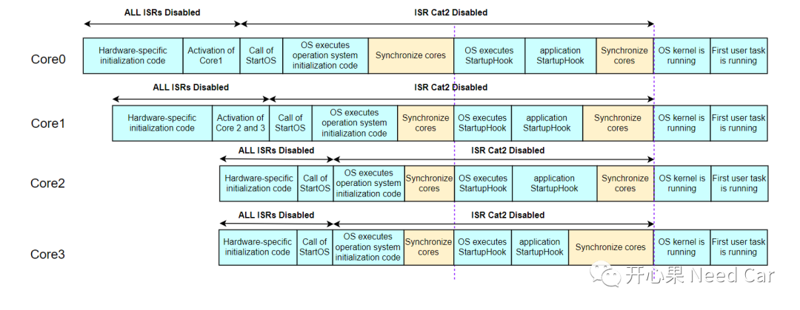
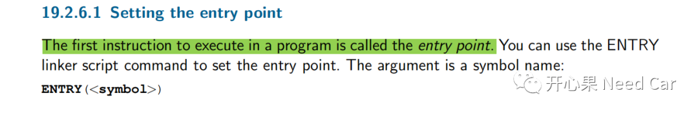
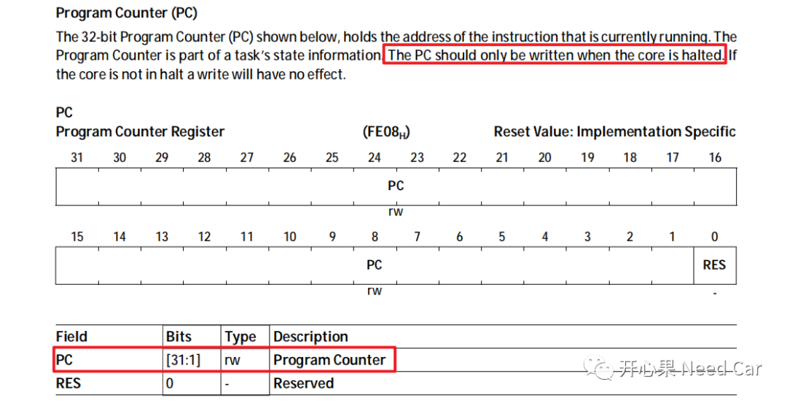
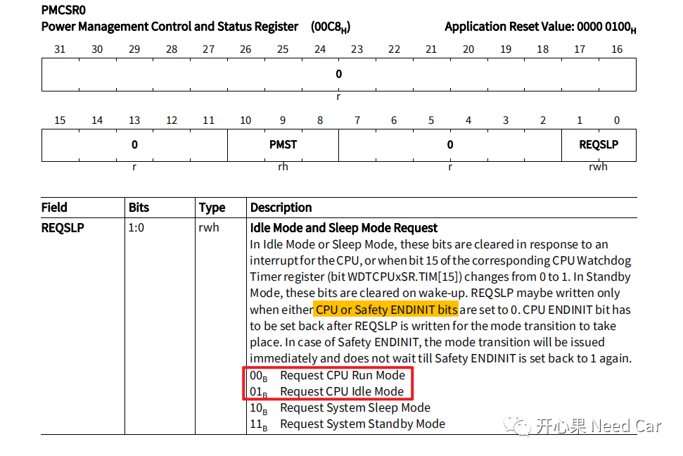

开心果 Need Car · 2022-11-11T09:54:00+08:00 · 微信原文
工程项目中，多核（multicore）的使用也非常普及。当然，只有深入地了解多核系统，才能更好地发挥其作用，减少Bug。本文，聚焦以下几点问题：
多核启动时序
如何实现多核同步

1、软件的启动时序
2、如何执行第一条指令
在启动多核之前，我们先搞清楚一个问题：uC如何知道程序的入口（Entry）呢？换句话说：uC去哪里执行第一条指令？答：通过链接文件的链接符指定。以HighTec编译器为例（其他编译器类似），HighTec设置程序入口地址的操作说明如下：

ENTRY(_START)之后，在源文件（eg：IfxCpu_CStart0.c）实现_START()函数，如下所示：
void _START(void){__non_return_call(_Core0_start);}
如上，_START()调用Core启动接口，先调用主核Core0的启动接口_Core0_start()。
/*Start remaining cores */(void)IfxCpu_startCore(&MODULE_CPU1, (uint32)&_Core1_start); /*The status returned by function call is ignored */(void)IfxCpu_startCore(&MODULE_CPU2, (uint32)&_Core2_start); /*The status returned by function call is ignored */(void)IfxCpu_startCore(&MODULE_CPU3, (uint32)&_Core3_start); /*The status returned by function call is ignored */
启动Core的实质是设置Core对应的PC（Program Counter）寄存器与
PMCSRx（Power Management Control and Status Register)寄存器。代码示意如下所示：
boolean IfxCpu_startCore(Ifx_CPU *cpu, uint32 programCounter){boolean retVal = TRUE;/* Set the PC for Core 1 */retVal &= IfxCpu_setProgramCounter(cpu, programCounter);/* Get the mode for Core 1 and set it to RUNNING *//* Core not running already */if (IfxCpu_getCoreMode(cpu) == IfxCpu_CoreMode_halt){retVal &= IfxCpu_setCoreMode(cpu, IfxCpu_CoreMode_run);}return retVal;}
如果要获取CPU的运行状态，可以读取SCU模块的PMSTATx（Power Management Status Register x）寄存器。
（一）PC（Program Counter）寄存器
PC寄存器如下所示，注意：操作PC寄存器时，需要Core处于halt模式，这也意味着：uC上电以后，从核默认进入Halt模式。

（二）PMCSRx（Power Management Control and Status Register)寄存器

/*Check if the same core is requesting to change the core run mode */if (IfxCpu_getCoreIndex() != index){ /*Request is for the other core *//*To access PMCSR of other CPUs handle the safety EndInit protection */uint16 safetyWdtPw = IfxScuWdt_getSafetyWatchdogPassword();IfxScuWdt_clearSafetyEndinit(safetyWdtPw);MODULE_SCU.PMCSR[(uint32)IfxCpu_getIndex(cpu)].B.REQSLP = reqslp;IfxScuWdt_setSafetyEndinit(safetyWdtPw);cpu->DBGSR.B.HALT = 2; /*reset the HALT bit, if it is already done it is no harm in writing again */}else{ /*Request is for self, this request normally only for halt, otherwise the core is already running anyway! *//*To access PMCSR of self handle the cpu EndInit protection */uint16 cpuWdtPw = IfxScuWdt_getCpuWatchdogPassword();IfxScuWdt_clearCpuEndinit(cpuWdtPw);MODULE_SCU.PMCSR[(uint32)index].B.REQSLP = reqslp;IfxScuWdt_setCpuEndinit(cpuWdtPw);}
4、各核main()函数的执行顺序
什么是同步呢？举个例子：甲周末约朋友乙和朋友丙小聚，约定到A点集合，等甲乙丙都到达A点，之后一起去小馆喝酒，这就是一种同步。对应到主从Core，它们之间如何同步呢？
软件代码示意如下所示：
/* Wait for CPU sync event */IfxCpu_emitEvent(&g_cpuSyncEvent);IfxCpu_waitEvent(&g_cpuSyncEvent, 1);
往期精彩回顾